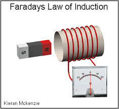
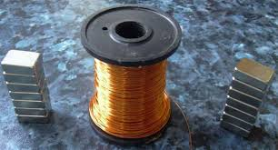
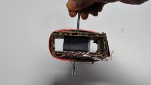

HOW DO GENERATORS WORK?
Generators work by pushing electrons through a piece of conductive matierial which is usually an insulated piece of wire. Since electrons are negitivly charged and magnets have a possitive and negitive side, when you spin a magnet inside insalated wiring you can push the elctrons out into a light, battery, etc.

WHAT IS A CONDUCTIVE MATIRIAL?
A conductive matrial is something that has "free atoms" which allow electrons to flow through, usually metal.
WHAT YOU WILL NEED:
25feet of insulated copper wire,
2 North and South pole magnets,
Drill,
Cardboard,
5" nail,
AMP meter

START BUILDING:
Make a rectangular box out of the carboard that has two open sides and wrap all of the 25 feet of wiring around it. Poke the 5" nail into the center and put your magnets on the nail in the middle of the box. Attatch the drill to the nail and attatch the end of the wire to your AMP meter and start drilling to get current.

want more imformation? click here